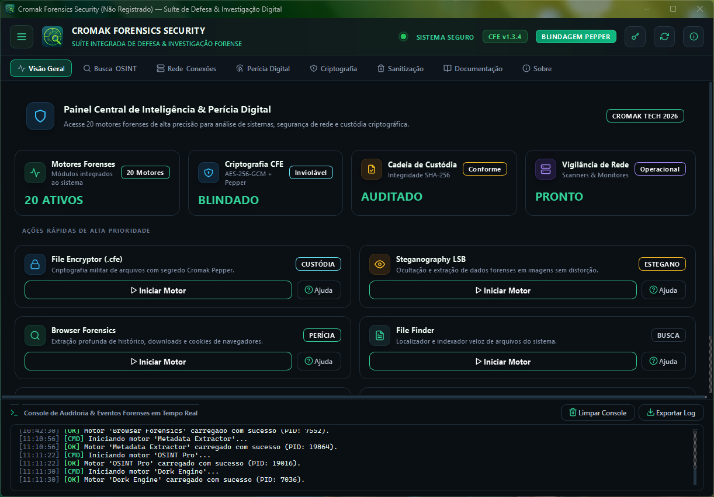
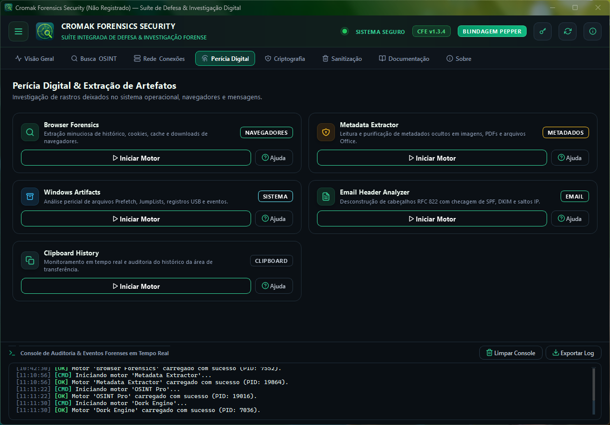
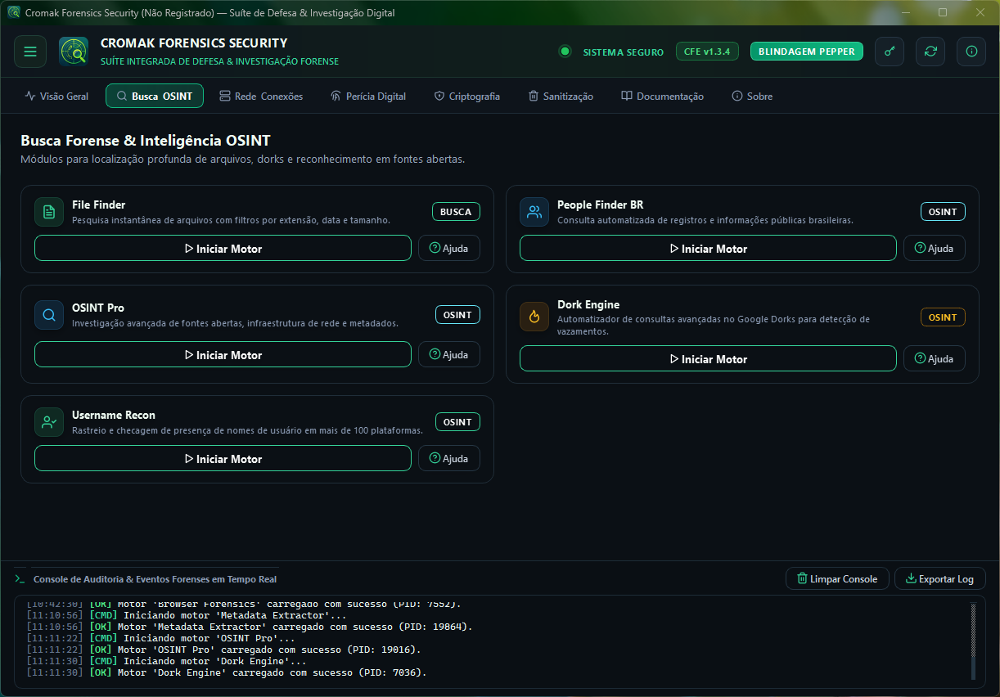
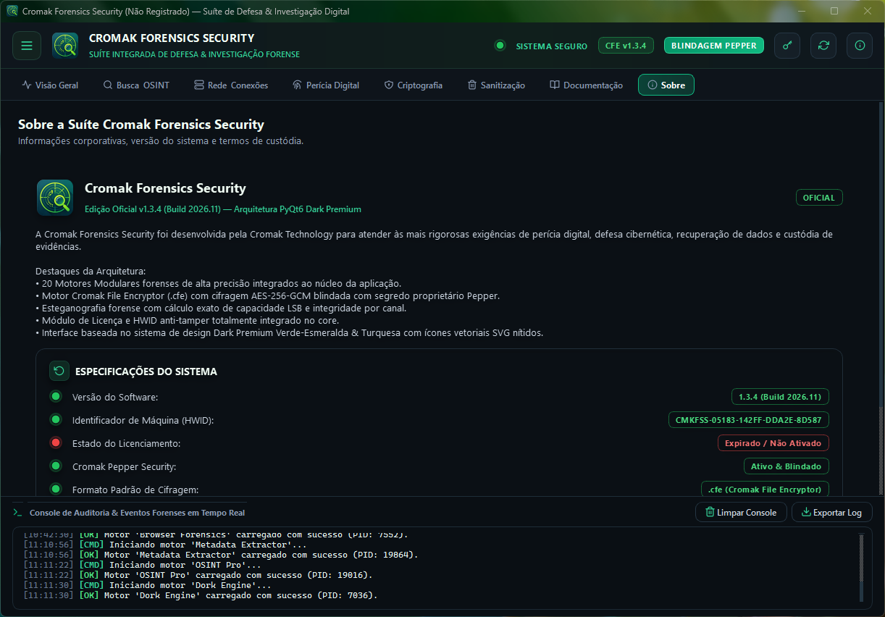

Cromak Forensics Security
A Suíte Definitiva de Perícia Computacional, Investigação OSINT, Defesa Cibernética e Custódia Forense.
Desenvolvida pela Cromak Technology para peritos criminais, pesquisadores de segurança, analistas de SOC/CSIRT e investigadores corporativos. Reúne 20 motores modulares independentes em uma arquitetura de alta performance com interface Dark Premium Verde-Esmeralda & Turquesa. Do carving de evidências ocultas no Windows à criptografia militar autenticada de relatórios periciais.

O que é o Formato .CFE com Blindagem Pepper?
O formato .cfe (Cromak File Encryptor) foi projetado pela Cromak Technology para atender às exigências mais duras de sigilo pericial e defesa cibernética. Diferente de criptografadores convencionais que apenas derivam uma chave a partir da senha digitada, o motor CFE aplica o Segredo Proprietário Pepper — um salt criptográfico de alta entropia injetado diretamente no núcleo binário.
Essa blindagem torna ataques de dicionário e rainbow tables matematicamente inviáveis, mesmo que o invasor capture o arquivo criptografado. Cada arquivo .cfe utiliza cifra autenticada AES-256-GCM (AEAD) com vetor de inicialização randômico de 96 bits, derivação PBKDF2-HMAC-SHA256 com 200.000 iterações e tag de autenticação de 16 bytes que impede qualquer alteração indesejada no conteúdo.
| Propriedade Criptográfica (.CFE) | Especificação de Blindagem Cromak Technology |
|---|---|
| Algoritmo Principal | AES-256-GCM (Galois/Counter Mode) com autenticação de integridade integrada (AEAD) |
| Segredo Proprietário Pepper | Blindagem de 256 bits fundida ao core — Impede força bruta externa e vazamentos de senha fraca |
| Derivação de Chave (KDF) | PBKDF2-HMAC-SHA256 com 200.000 iterações e salt criptográfico único de 16 bytes por arquivo |
| Vetor de Inicialização (IV / Nonce) | 96 bits gerados via gerador criptográfico do sistema operacional (CSPRNG) |
| Autenticação & Anti-Tampering | Tag GCM de 128 bits: qualquer modificação de 1 bit invalida o arquivo instantaneamente |
O Arsenal de 20 Motores Forenses Integrados
Cada motor opera de forma modular e isolada, sem dependências cruzadas, garantindo zero poluição e máxima estabilidade pericial.
Criptografia & Custódia
- File Encryptor (.cfe): Cifragem militar AES-256-GCM com blindagem Pepper.
- Steganography LSB: Ocultação e extração de dados forenses em imagens lossless.
- Hash Verifier: Prova de integridade com 7 hashes simultâneos (SHA-256, SHA-512, MD5...).
Perícia Digital do Sistema
- Windows Artifacts: Extração de Prefetch, ShimCache, ShellBags e USB.
- Browser Forensics: Análise de histórico, downloads e cookies de 5 navegadores.
- Data Recovery: Recuperação forense e file carving de arquivos deletados.
- File Finder: Localização instantânea por magic bytes e hashes.
Vigilância & Rede
- Port Monitor: Vigilância em tempo real de sockets TCP/UDP e processos.
- LAN Scanner: Varredura de hosts ativos na rede local via ARP e ICMP.
- Wi-Fi Key Recovery: Extração e auditoria de perfis de rede WPA2/WPA3.
- Vulnerability Scanner: Auditoria heurística de portas abertas e banners.
Investigação OSINT
- Dork Engine: Gerador de consultas especializadas de busca e inteligência.
- People Finder BR: Reconhecimento de fontes abertas no ecossistema BR.
- Username Recon: Rastreamento de identidades em dezenas de plataformas sociais.
- Email Header Analyzer: Auditoria RFC 822 com validação SPF, DKIM e DMARC.
Sanitização Militar
- Disk Wiper: Sanitização militar (DoD 5220.22-M, Gutmann 35 passes, NIST).
- File Shredder: Destruição de arquivos com sobregravação e renomeação aleatória.
- Metadata Extractor: Limpeza e extração de metadados em fotos, PDFs e docs.
- Clipboard History: Análise de histórico da área de transferência com expurgo.
Cromak Forensics vs. Ferramentas Fragmentadas
Por que profissionais de segurança e investigadores estão migrando para a suíte unificada da Cromak Technology.
| Critério de Avaliação | Ferramentas Gratuitas / CLI Fragmentadas | Cromak Forensics Security |
|---|---|---|
| Arquitetura Integrada | 15 a 20 utilitários separados em linha de comando | 20 Motores integrados em interface única Dark Premium |
| Criptografia com Pepper Secreto | Apenas senhas simples; vulnerável a força bruta | Cromak File Encryptor (.cfe) com Blindagem Pepper |
| Telemetria e Privacidade | Coleta de dados ocultos, licenças baseadas em nuvem | 100% Offline / Isolamento Air-Gapped / Zero Telemetria |
| Cadeia de Custódia | Cálculo manual de hash por arquivo | Auditoria em tempo real com exportação de logs e 7 hashes |
| Modelo de Licenciamento | Assinaturas de milhares de dólares por ano | Vitalício Perpétuo por Hardware ID (Pague uma vez) |
Explore o Forensics Security em Ação
Capturas reais de alta definição demonstrando os módulos forenses em operação.

Painel Central de Inteligência & Perícia Digital
Visão global dos 20 motores ativos, monitoramento de integridade, status da blindagem Pepper (.cfe), auditoria de custódia SHA-256 e console de eventos forenses em tempo real.

Criptografia CFE & Esteganografia LSB
Cifragem militar de arquivos .cfe com blindagem Pepper, ocultação forense LSB em imagens sem perda com integridade por canal e verificador multialgorítmico com 7 hashes instantâneos.

Perícia Digital & Artefatos do Windows
Extração profunda de evidências: histórico, cookies e downloads de navegadores (Chrome, Edge, Firefox, Brave), artefatos Prefetch, ShimCache e ShellBags, além de file carving de dados deletados.

Vigilância de Rede & Port Monitor
Monitoramento em tempo real de conexões ativas, sockets abertos e associação a PIDs de processos. Recuperação de credenciais Wi-Fi armazenadas e scanner de vulnerabilidades.

Inteligência OSINT & Reconhecimento
Dork Engine com dezenas de filtros avançados, rastreamento de nomes de usuário (Username Recon) em dezenas de redes e análise de cabeçalhos de e-mail com verificação de SPF, DKIM e DMARC.

Sanitização Militar & File Shredder
Extermínio seguro de dados seguindo os protocolos DoD 5220.22-M (3 passes), Gutmann (35 passes) e NIST 800-88. Destruidor de arquivos com sobregravação criptográfica e renomeação aleatória garbled.

Especificações do Sistema & Licenciamento HWID
Vinculação criptográfica direta ao identificador da máquina (HWID). Ausência completa de dependências externas ou servidores de telemetria para garantir sigilo legal em auditorias judiciais.
As 20 Ferramentas Integradas do Sistema
Cada ferramenta foi projetada como um motor independente de alto rendimento. Sem módulos pesados de terceiros, sem dependências externas e 100% focado em precisão pericial e conformidade de custódia.
Cromak File Encryptor (.cfe)
Cifrador militar autenticado que gera arquivos protegidos .cfe. Aplica cifra AES-256-GCM (AEAD), KDF PBKDF2-HMAC-SHA256 com 200.000 iterações e a exclusiva blindagem proprietária Cromak Pepper de 256 bits fundida ao binário, tornando ataques de dicionário e rainbow tables matematicamente inviáveis.
Steganography LSB
Ocultação e extração de cargas confidenciais nos bits menos significativos (LSB) dos canais RGB de imagens lossless (PNG, BMP). Inclui cálculo rigoroso de capacidade máxima teórica, verificação de integridade e preservação visual perfeita sem ruído detectável a olho nu.
Hash Verifier
Validação instantânea de integridade para cadeia de custódia forense. Calcula simultaneamente 7 hashes (SHA-256, SHA-512, SHA-1, MD5, SHA-384, BLAKE2b e CRC32) e permite confronto automatizado com hashes de referência para certificar que o arquivo periciado não sofreu nenhuma alteração.
Browser Forensics
Extração pericial em navegadores Chromium e Gecko (Google Chrome, Edge, Firefox, Brave, Opera GX). Coleta histórico de URLs, termos pesquisados, cookies de autenticação, downloads, favoritos e senhas salvas através da descriptografia transparente da chave mestra DPAPI do Windows.
Windows Artifacts
Investigação e reconstrução temporal das atividades do usuário e programas executados no Windows. Analisa arquivos Prefetch (.pf), ShimCache, ShellBags, UserAssist, histórico de dispositivos USB plugados e logs de eventos críticos do sistema (EVTX).
Metadata Extractor
Leitura minuciosa e expurgação de metadados ocultos em imagens (EXIF, coordenadas de GPS, modelo da câmera, data exata) e documentos corporativos (PDF, DOCX, XLSX). Permite purificar evidências antes de anexar laudos a processos públicos, evitando doxxing e vazamento acidental.
Email Header Analyzer
Desconstrução forense de cabeçalhos RFC 822 / MIME de mensagens de e-mail (.eml). Audita autenticações criptográficas (SPF, DKIM, DMARC), traça a rota completa de servidores interceptores (hops) e calcula score de confiabilidade e alertas anti-phishing.
Clipboard History
Monitoramento ativo e auditoria contínua da área de transferência do Windows. Captura em tempo real textos, URLs, credenciais copiadas e caminhos de arquivos manipulados, preservando registros cronometrados com timestamp exato para perícia de vazamento de dados.
LAN Scanner
Motor de mapeamento e descoberta de ativos de rede local multithreaded (até centenas de threads). Detecta hosts ativos via ICMP e ARP, resolve endereços MAC e identifica automaticamente fabricantes de placas de rede pela base OUI IEEE sem abrir terminais externos.
Port Monitor
Vigilância de conexões ativas e portas TCP/UDP em escuta (Listening / Established). Associa imediatamente cada socket ao executável correspondente, identificando PID, caminho no disco, usuário executor e IPs remotos para detecção de backdoors e canais C2.
Wi-Fi Key Recovery
Recuperação pericial de perfis de rede sem fio (WLAN) armazenados no Windows. Revela senhas de redes conhecidas (WPA/WPA2/WPA3 Personal), nomes de rede (SSID), métodos de autenticação e cifras de enlace com operação nativa, discreta e sem abertura de janelas de prompt.
Vulnerability Scanner
Scanner automatizado para identificação de fraquezas e riscos em portas de rede expostas. Analisa cabeçalhos e banners de serviços ativos, detecta daemons desatualizados e mapeia portas críticas para resposta a incidentes e hardening de servidores.
File Finder
Localizador de evidências ultrarrápido com indexação instantânea de diretórios e unidades completas. Permite filtros cirúrgicos por múltiplas extensões, expressões regulares, arquivos ocultos do sistema, faixas de tamanho e data de modificação em volumes NTFS/FAT.
People Finder BR
Módulo desenvolvido sob medida para investigações forenses em território nacional. Facilita o cruzamento pericial com bases públicas abertas brasileiras, portais de transparência de tribunais e registros públicos oficiais, respeitando normas de privacidade e sigilo legal.
OSINT Pro (Omni Search)
Motor avançado de investigação e correlação em fontes abertas. Executa pivotagem de alvos através de domínios, endereços IP, sub-redes ASN, registros DNS históricos e servidores vinculados, desmascarando a infraestrutura completa de operadores maliciosos.
Dork Engine v2.0 Ultra
Construtor e sintetizador automático de consultas avançadas de Google Dorks. Permite combinar operadores cirúrgicos (inurl, intitle, filetype, site) e disparar buscas com raspagem automática no DuckDuckGo, Bing, Brave, Google, GitHub e Shodan.
Username Recon
Rastreio automatizado de pegada digital por codinome em mais de 100 plataformas, redes sociais e fóruns mundiais. Efetua checagens assíncronas paralelas com validação de status HTTP, revelando perfis ativos, avatares e links públicos associados ao investigado.
Disk Wiper
Higienização profunda de setores livres em discos rígidos (HDDs), SSDs e mídias removíveis. Sobrescreve blocos desalocados com padrões criptográficos, eliminando fragmentos magnéticos remanescentes e prevenindo recuperação por perícia física ou de laboratório.
File Shredder
Extermínio irreversível de arquivos e diretórios sensíveis. Implementa algoritmos certificados como DoD 5220.22-M (3 passes), Gutmann (35 passes) e randômico, incluindo renomeação pseudoaleatória prévia de metadados antes da exclusão física definitiva.
Data Recovery
Motor pericial de recuperação de dados via análise direta de blocos e reconhecimento de assinaturas binárias (Magic Bytes). Restaura arquivos excluídos e fragmentados em partições corrompidas ou formatadas (FAT32, exFAT, NTFS) mesmo quando a tabela MFT foi destruída.
Licenciamento Simples e Transparente
Avalie por 40 dias com todos os 20 motores liberados ou adquira sua licença vitalícia sem mensalidades.
Avaliação Gratuita (40 Dias)
- Todos os 20 motores forenses liberados
- Motor Cromak File Encryptor (.cfe) com Pepper
- Extração de artefatos do Windows e Browsers
- Esteganografia LSB e sanitização militar
- Período oficial de avaliação de 40 dias
- Exibe tela de avaliação informativa
- Uso pericial contínuo requer licença PRO após o trial
Licença PRO Vitalícia
- Licença Vitalícia Permanente (Pague Uma Única Vez)
- Zero Avisos ou Janelas de Avaliação
- Uso Profissional, Judicial e Corporativo Ilimitado
- Todos os 20 motores desbloqueados em capacidade máxima
- Geração de relatórios com cadeia de custódia
- Atualizações contínuas de motores e regras
- Suporte técnico prioritário via Código HWID
Envie seu Código HWID ao suporte para receber o serial
Documentação Técnica Completa
Acesse o manual operacional e o guia de cadeia de custódia oficial da suíte.
Windows 10 / Windows 11 (64-bit nativo)
PyQt6 Dark Premium com Aceleração Gráfica
Zero Telemetria / Compatível com Air-Gapped
Inno Setup 7 com suporte a 11 idiomas
Perguntas Frequentes (FAQ)
O software pode ser executado em máquinas sem acesso à internet (Air-Gapped)?
Sim. A suíte foi projetada sob a política de Telemetria Zero. Todas as operações de perícia digital, esteganografia, sanitização de disco e criptografia acontecem 100% de forma local e offline, permitindo o uso em laboratórios forenses militares e judiciais isolados de qualquer conexão externa.
Como funciona a blindagem Pepper nos arquivos .CFE?
O Pepper é um componente secreto embutido diretamente no núcleo criptográfico do software. Mesmo que um atacante obtenha o arquivo cifrado e conheça o salt público, ele não poderá realizar ataques de força bruta offline ou usar tabelas rainbow sem a chave do motor Pepper.
Como é feita a ativação da licença através do HWID?
Ao iniciar o aplicativo ou acessar a aba 'Sobre', o sistema gera um código de identificação de máquina exclusivo (com prefixo CMKFSS-). Após adquirir a licença, basta enviar esse código para o suporte da Cromak Technology para receber a sua chave de ativação permanente e intransferível.
Qual a diferença entre a versão de avaliação e a PRO?
Durante o período de 40 dias de avaliação, todos os 20 motores funcionam sem restrição técnica, permitindo testar toda a capacidade pericial do sistema. A licença PRO remove todas as janelas de avaliação, autoriza o uso pericial e judicial contínuo e garante suporte técnico especializado.